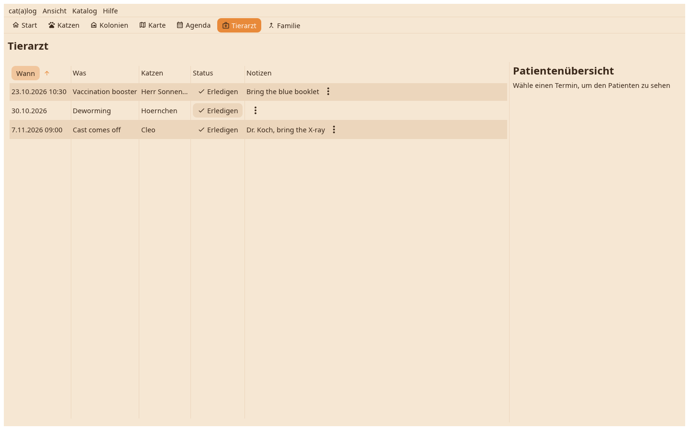

Die Fahrten und Termine über alle Katzen, offene zuerst, mit dem Patientenblatt der gewählten und dem Bericht einen Klick entfernt.

Eine Zeile pro Termin oder Tierarztfahrt mit Datum, was und wen, offene zuerst sortiert. Ein Klick zeigt daneben das Patientenblatt: die Daten der Katze, die Felder, nach denen ein Tierarzt fragt, die letzten Werte.
Abschließen beendet den Termin und kann einen Wert in ein Feld schreiben, das Impfdatum zum Beispiel; eine Fahrt fragt, welche Katzen behandelt wurden. Der Berichtknopf baut den Tierarztbericht für den Patienten.